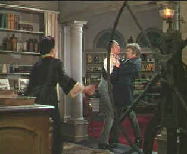

| Phantom
of the Opera (SE) /B,B |
| Universal/1943/93/FS
1.33 |
Phantom
of the Opera, a vintage Universal horror offering, makes its
way to DVD in rich color with little evidence of the 1943 birth
date. This is the second film version of the Gaston Leroux
story, adding sound and color to the original which starred Lon
Chaney as the Phantom.
 |
| Steal
my music, will you! ©Universal |
The lush
color of the opera house settings plays well against the twisted
menace of the disfigured phantom. A violinist at the Paris
Opera, Enrique Claudin has toiled in the orchestra pit for
almost twenty-five years. Claudin falls in love with a young
singer in the chorus, Christine Dubois, and secretly her
finances her training. When Claudin begins to lose sensitivity
of his hand, his playing suffers noticeably and, with regret,
the violinist is given walking papers by the orchestra
conductor. His world is falling apart. The opera teacher refuses
to train Dubois without continued payment, Claudin's landlady
warns him about falling behind in the rent and when, a last
hope, his original sonata, is brushed aside by a publisher,
Claudin loses control, kills the music publisher and is
disfigured in the ensuing struggle. It's a short path to the
opera house and his behind the scene mischief.
This Phantom of the Opera stands
more as a pathetic romance than a chilling horror essay. Claude
Rains carries the delicacy and effete sensibilities of Claudin
with him as he becomes the Phantom. It's difficult to believe at
times that the love struck violinist is wreaking terror
through the halls of the Paris Opera. The operative theme here
may be that love drives men beyond their imagined
capabilities.
Nelson Eddy belts out the opera
melodies as the erstwhile hero of Phantom, baritone Anatole
Garron. Newcomer Susanna Foster plays opposite him as Dubois.
Paging Jeanette McDonald; Foster fails to light up the screen
like Eddy's co-star of numerous musicals.
The reign of Rains as the Phantom is
quite abbreviated. In this Phantom version, the police do an
expeditious job of luring ghost from the secret passages of the
old opera building to the forefront of the stage. A clever
staging suggested by the opera's leading man Garron leads the
baritone and police inspector to the bowels of the opera house
where the Phantom has imprisoned the soprano of his dreams. Some
humor is injected into the screenplay as Garron and the police
inspector compete for the affections of Dubois. Only the Phantom
takes things into his own hands.
The still vital color makes this Phantom
of the Opera DVD a pleasure to watch. The film demands small
audience commitment for the revealed pleasures. The transfer
elements are in excellent condition, with minor dirt and a few
scratches. Some digital cleaning appears to have been done int
he video stage and a few scenes are less than perfectly sharp.
You'll hardly notice it when enjoying this Phantom version. The
colors are rich with no evidence of smearing. The sets look
lovely in three strip Technicolor and color registration is dead
on accurate.
Universal has released Phantom of
the Opera in a special edition DVD as part of their Classic
Monster Collection. Scott McQueen, film historian and
preservation evangelist, hosts a documentary about the making of
The Phantom of the Opera: The Opera Ghost: A Phantom Unmasked.
The documentary is padded with clips from other Universal horror
offering, but it reveals enough about the origins of the phantom
to live up to its title. McQueen is humorous in his presentation
and informative on a audio commentary accompanying the film. |
|

Selections from the feature archive
include articles on
Akira Kurosawa, Frank
Darabont, Blonde
Bimbos, Hollywood
Street Gangs, or Vietnam:
The Hollywood Pariah, and many more....
Sturges
Emerges
Preston Sturges was Hollywood's resident comic genius for more
than a decade. His movies are timeless. Click on his image to read
all about it.

Images
is a non-commercial Web site created for everyone
who enjoys movies and popular culture. Images is
published quarterly; however, new reviews will
appear each week, so check back often.
This Canadian online DVD
retailer may not offer pepperoni, but does have a selection of
5000 plus DVDs. How about deep-dish discounts guys.

Looking for information about
widescreen movies and hardware. The
Widescreen Movie Center is the place to go.

Buy and sell pre-owned books, movies,
music and games. Half.com lets
visitors buy and sell used books, CDs etc. for half price. Sellers
pay a 15% commission; buyers get a money back guarantee.

The
Movie Poster Archive include extensive poster images from the
films of stars like Susan Hayward, Kirk Douglas, Katharine
Hepburn and many more. Our featured star is
Tyrone
Power.

Need
a daily fix of movie quotes. Reel Quotes Newsletter has
the answer. Click on the Reel Quotes symbol for more.
|